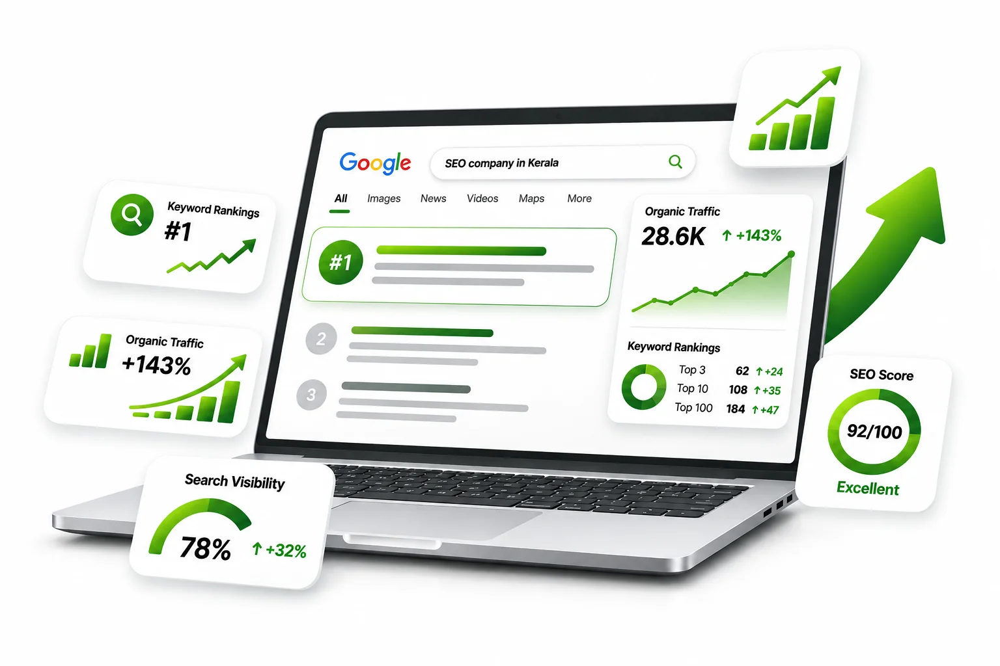
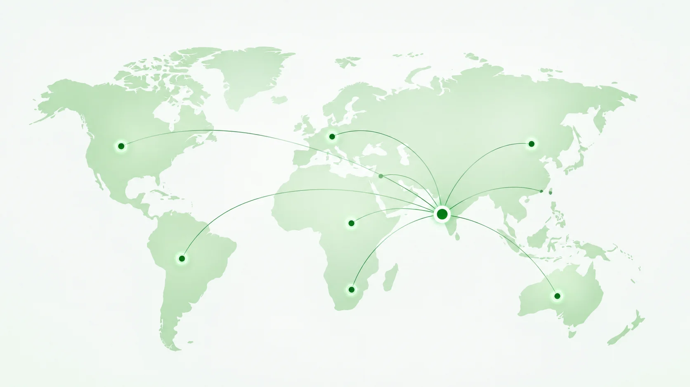
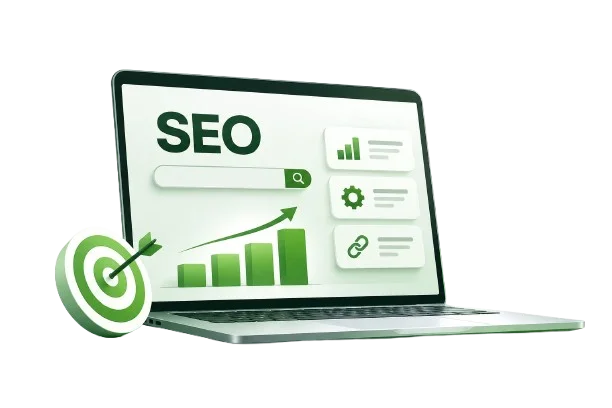

SEO Company in Calicut, Kerala
Rank Higher. Get Found. Grow Organically.
Bamboost is an SEO company in Calicut, Kerala that helps businesses get found on Google, Google Maps and AI search, and turn those searches into calls and enquiries.

- Higher Rankings
- Organic Traffic Growth
- More Customers
Why Customers Can't Find Your Business on Google
Most businesses in Kozhikode don't lose customers because of their product. They lose them because a competitor shows up first when someone searches. These are the problems we find most often:
Not in the Google Maps results.
Nearby customers search "near me" and see three competitors, not you.
A website Google struggles to read.
Slow pages, missing titles and broken links hold back even good businesses.
The wrong keywords.
Pages written around words your customers never search for.
No trust signals.
Few reviews, few websites linking to you, and nothing that shows Google you're a real Kozhikode business.
Invisible in AI answers.
People now ask ChatGPT and Google's AI Overviews for recommendations, and those tools only mention businesses they can verify.
Our SEO Services in Calicut
Everything your website needs to rank, from one team in Kozhikode. Each service has its own page with the full details.
Local SEO and Google Maps
Get into the Maps results for Kozhikode and nearby searches with a complete Google Business Profile, reviews and local citations.
local SEO services →Technical SEO
Speed, mobile performance, crawling and indexing fixed at the code level by our own developers.
technical SEO services →On-page SEO
Titles, headings, content and internal links matched to what your customers search.
on-page SEO services →Off-page SEO and link building
Links from relevant Kerala and industry websites, earned through outreach. No bought links.
off-page SEO services →AI SEO (GEO and AEO)
Make your business easy for ChatGPT, Gemini and Google AI Overviews to find, understand and mention.
AI SEO services →SEO-ready websites
New or rebuilt websites designed to rank and convert from day one.
web development company in Kerala →Why Local Businesses Choose Bamboost
As an SEO agency in Calicut, we're close enough to meet you and focused enough to fix what's holding your site back. Whether you're comparing agencies or looking for the best SEO company in Kozhikode, check how the work actually gets done:
We fix things, not just report them.
Our SEO specialists and web developers are one team, so technical problems get fixed in days, not handed to someone else.
You see the same data we do.
Reports come from Google Search Console and Google Analytics, not scores only we can read.
White-hat only.
No bought links, fake reviews or tricks that risk a Google penalty.
One point of contact.
A named person who knows your business and answers your calls.
How We Work: From Free Audit to Monthly Report
Every project starts the same way: with a free audit of where you stand today.
Start with a free audit-
SEO audit
We check your website, Google Business Profile and three local competitors, then send a short report with the top fixes.
-
Keyword and competitor plan.
We find the searches your customers actually use and map each one to the right page.
-
Technical fixes.
Our developers fix speed, mobile issues, broken links and indexing problems at the code level.
-
Page and content improvements.
Titles, headings, service pages and FAQs rewritten around what buyers search.
-
Local SEO and links.
Google Business Profile, reviews, directory listings and links from relevant Kerala websites.
-
Report and review.
Rankings, clicks, calls and enquiries from Google's own tools, with next month's priorities.
SEO for Your Industry
Each industry searches differently. These are the ones we know best in Kozhikode and across Kerala.
Real estate
More site-visit enquiries for builders, developers and agents.
real estate SEO services →Education
More admission enquiries for schools, colleges and coaching centres.
education SEO services →Clinics and healthcare
More patient calls from Google Maps and local search.
local SEO for clinics →SEO Services in Kerala, Beyond Kozhikode
We're based in Kozhikode, but we work as an SEO company in Kerala for businesses. Strategy calls, reporting and fixes all happen online, with an office visit whenever you want one.
Choosing an SEO agency in Kerala is mostly about evidence. The best SEO company in Kerala for you is the one that can show real Search Console data, explain its plan in plain language and fix technical problems itself. Use the checklist in our FAQ below to compare any SEO agency, including us. The best SEO agency in Kerala for a small business is rarely the biggest one; it's the one that knows your local market.

AI SEO Services for ChatGPT and Google AI Answers
More people now ask ChatGPT, Gemini, Perplexity or Google's AI Overviews "which SEO company in Calicut should I use?" before they search. AI tools recommend businesses they can find, understand and verify across the web. Our AI SEO services make that easier:
Clear answers on your site
Short, direct answers to the questions your customers ask, which AI tools can quote.
Structured data (schema)
Code that tells search engines your business name, location, services and reviews.
Consistent listings
The same name, address, phone and description on Google, directories and social profiles.
Mentions where AI looks
Listings and articles on the sites AI tools cite for your industry.
What Our SEO Clients Say
Feedback from Kerala businesses we work with on SEO.
We are getting more enquiries through Google now. Our business visibility has improved, and we are happy with the SEO work.
The team is very supportive and keeps us updated about the work. They explain everything clearly and are easy to work with.
Our website is getting better visibility on Google. We have seen improvements in organic traffic after working on SEO with Bamboost.

What Does SEO Cost in Kerala?
SEO cost in Kerala depends on four things: how competitive your keywords are, how many locations you target, the current state of your website, and how much content and link building you need. A single-location business targeting Kozhikode needs far less work than an ecommerce store competing across India.
We don't sell fixed packages. After the free audit, you get a written proposal with the scope, the monthly cost and what you'll see each month.
Get a quote for your websiteFrequently Asked Questions
Ready to Get Found on Google in Kerala?
Book a free SEO audit. We'll check your website, Google Business Profile and rankings, and show you what's stopping customers from finding you, whether or not you hire us.